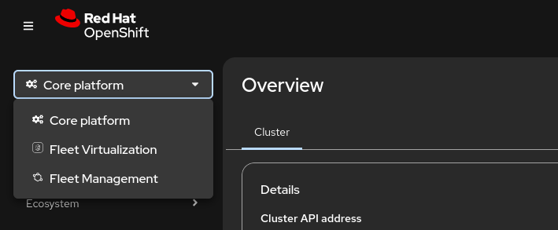

The different perspectives in the OpenShift Console
Starting with OpenShift 4.19 (released in mid-2025), the console shifted from a dual-perspective model to a Unified Perspective. This change acknowledges the evolving "Platform Engineer" role, where the line between application development and infrastructure management has blurred.
While the console is now unified by default, it effectively organizes the cluster into three functional "areas" rather than rigid perspectives:
-
Core Platform (The New Default): This is the core experience. It merges the Administrator tools (nodes, storage, operators) with Developer tools (topology, builds, serverless). You no longer need to switch modes to jump from a high-level application view to the underlying pod or node details.
-
Virtualization Perspective: When the OpenShift Virtualization Operator is installed, the console intelligently surfaces a virtualization-heavy view. It includes a Multi-cluster Tree-View and a dedicated Virtualization Dashboard designed to make VMware or RHV admins feel at home.
-
Fleet Management Perspective: This perspective is the realization of the "single pane of glass" for multi-cluster operations. It is officially surfaced through the integration of Red Hat Advanced Cluster Management (ACM) directly into the primary OpenShift console. It moves the focus from managing a single cluster to managing a distributed "fleet" of clusters across on-premises, cloud, and edge environments.
Go to the upper right menu and select the Perspective dropdown to switch between the different perspectives.
